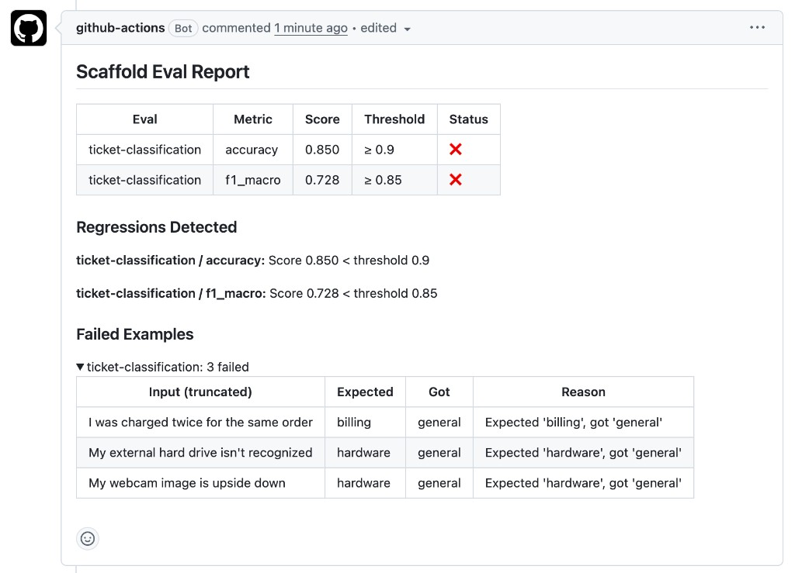

llmci is a CI quality gate for LLM apps. One YAML file, one CLI command, exit 0 or 1. Point it at any script — JSON in, JSON out — and gate every PR.
Someone changed the prompt. Production quality tanked. Nobody noticed for a week.
pip install llmci
CLI command: llmci · config: llmci.yaml

No platform to sign up for. No SDK to integrate. No data leaving your infrastructure. A CLI that reads a YAML file and exits 0 or 1. Your first eval runs in under five minutes.
Add a llmci.yaml to your repo. Point it at your eval dataset, pick metrics, set thresholds.
One step in your GitHub Action or CI pipeline. llmci runs evals and compares against your main branch baseline.
Pass or fail. If quality degrades beyond your thresholds, the PR is blocked with a detailed regression report.
A support app routes tickets into hardware, billing, account, or software. Here’s what you add to your existing repo — your app code stays unchanged, wrapped by a thin eval script.
Gray files are your existing app. Run llmci init to scaffold the llmci additions.
Commit these four files. On every pull request, CI runs llmci run against your dataset, compares scores to the main branch baseline, and posts an eval report as a PR comment — metrics, thresholds, and any failed examples. If quality drops, the check fails and the PR is blocked.
One YAML file defines everything. Deterministic metrics for classification. LLM-as-judge for open-ended generation. Your pipeline runs as a subprocess — any language, any framework.
Runs your pipeline as a subprocess. llmci doesn't need to know your stack—just inputs and outputs.
Exact match, F1, accuracy for deterministic tasks. LLM-as-judge with custom rubrics for generation.
Pipeline-level evals catch regressions from retrieval, preprocessing, and data changes—not just prompt edits.
Absolute quality floors or max-regression limits. Smoke-test subsets for fast CI, full suites on merge.
./evals/tickets.jsonl in your repo, or s3:// and https:// URIs with optional caching.
The core workflow is YAML + llmci run in CI. These are optional capabilities — each documented in depth on the use cases page.
Automatically re-tune prompts when switching models. Holdout validation and early stopping built in.
Evaluate trajectories, tool budgets, and outcomes — not just final output. Same black-box command contract.
Start with 10 hand-picked examples. Use dataset add, check, and import to grow coverage over time.
Langfuse and Braintrust monitor production. llmci gates PRs. No account, no platform, no SDK instrumentation — just a CLI that reads YAML and exits 0 or 1.
| llmci | Promptfoo now owned by OpenAI | Langfuse | DeepEval | |
|---|---|---|---|---|
| Primary purpose | CI quality gate | Prompt comparison | Observability | Automated eval CI |
| Runs in CI natively | ✓ Built for it | Partial | Limited | ✓ |
| Blocks PRs on regression | ✓ | Partial | ✗ | ✓ |
| Not observability / no dashboard | ✓ | Partial | ✗ | ✓ |
| Black-box testing (any stack) | ✓ | Partial | ✗ | ✗ |
| Auto model migration | ✓ | ✗ | ✗ | ✗ |
| Agentic workflow testing | ✓ | ✗ | Tracing only | ✗ |
| Pipeline-level testing | ✓ | Prompt-level only | N/A | Prompt-level only |
| Provider neutral | ✓ Community-owned | Owned by OpenAI | ✓ | ✓ |
| Setup time | 5 minutes | ~30 minutes | Hours | ~30 minutes |
A test suite for your LLMs. Open source on PyPI. Five-minute setup. Never merge a regression again.